国・地域の見分け方
- ドメインは.in(2023/7/31修正、コメントご指摘ありがとうございます)
- 言語はヒンディー語など多数の言語が存在し地域によって異なる
- 特徴的な形の電柱が多い（インドの電柱）
見つかる標識
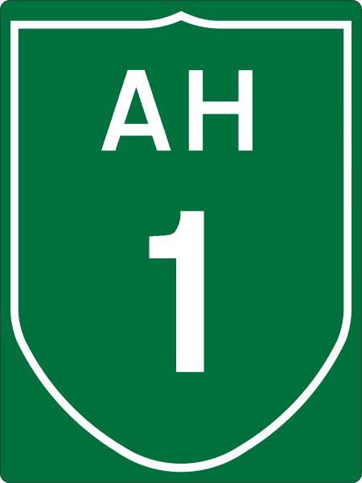
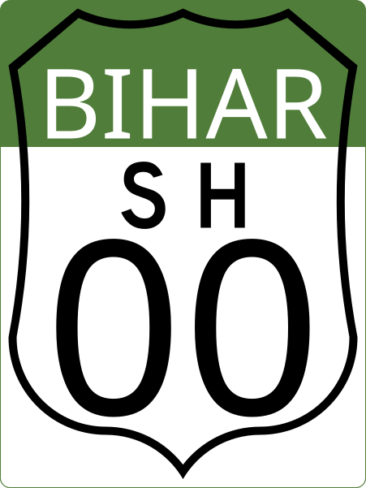
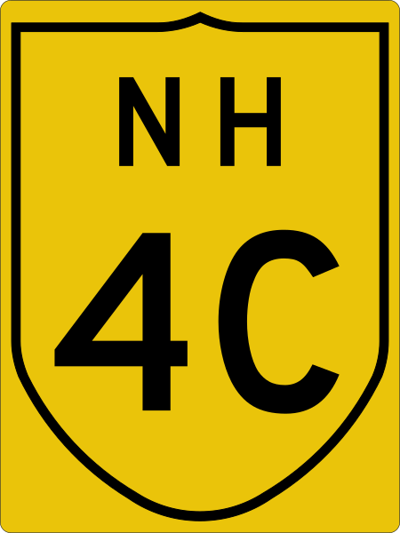
.svg)
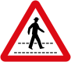
代表的な企業
言語が特徴的で英語のみの時もある。また都心では看板の下に英語で住所が書いてあることも多いので都市の判別はすぐにできることが多い。しかし、インドは都市圏でも住所システムが完全には整備されておらずときどき商品が届かないこともある(参考文献 インドEC市場調査報告書 - 日本貿易振興機構)くらいなので、住所が分かっていても地域や道路を絞り込むのは結構難しいかも。

他の国ではあまり見かけない形の電柱が多い（インドの電柱）。一番多いのは「山」や「⚓」の形のような上部が３つに分かれた電柱。動画は最近の洪水時のインタビュー動画で、うしろに電柱が映っている。
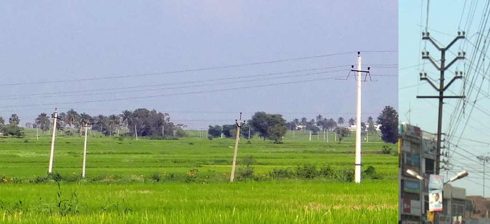
電柱の配線が綺麗に整備されていない場合も多い。
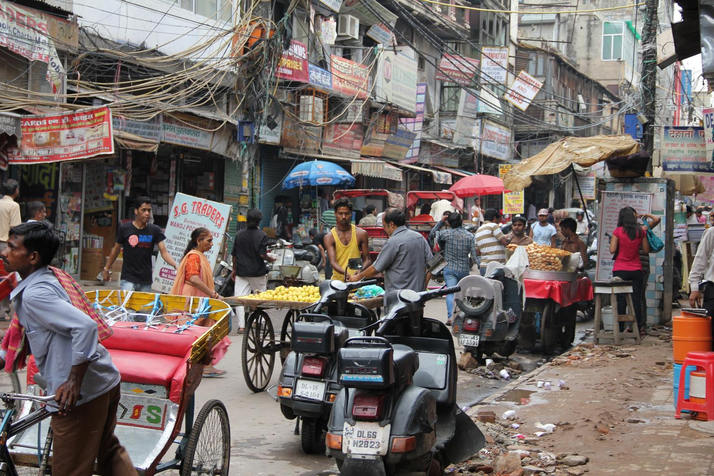
画質が悪く大きいぼかしがかかっていることが多い。他の国でもぼかしがあるので画質だけでインドと判断するとミスする可能性あり。
右のようなカンボジアにありそうな形のボラードがある。白黒のボラードのようなものもある。
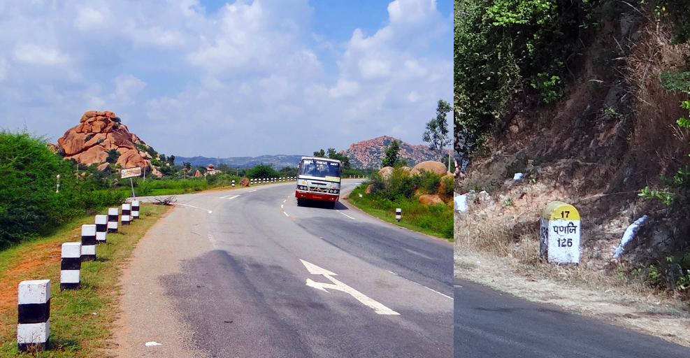
ナンバーは白・黄・黒色など複数存在する。EUのナンバーに見えるタイプは見間違えないように注意(参考文献 Different Types of Number Plates in India, their Meaning, Usages and More)。

自作、大まかな形で正確な形状ではないです
{{< amazoncard url=“https://amzn.to/4iIaGQR” title=“インド北東部を知るための45章 (エリアスタディーズ)” price=“¥1,760” tagline=“アッサム州はじめ8つの州からなるインド北東部は、民族的・文化的・宗教的に際だった特徴を持つとともに、近年開発の重点地域となり、日本とも縁深い。本書は地理から政治まで網羅し、この地域の多様性と複雑な歴史が織りなす魅力を紐解き、インド北東部の独自性を深く探る。”
}}
#India's 22 scheduled #languages by the name of the script they use pic.twitter.com/PBDqehiogD
— India in Pixels by Ashris (@indiainpixels) January 17, 2021
インドの主要な言語の分布と、その見分け方について解説しました！#GeoGuessr pic.twitter.com/NL4wmCBzcz
— LAKE TOUYA / とうや (@geotouya) November 5, 2023
アフマダーバード周辺。ちなみに階段井戸もアフマダーバード周辺に多い。

By Aksi great, Dipan Shukla - Own work, CC BY-SA 3.0, Link
◁の形が文字中に散見される。
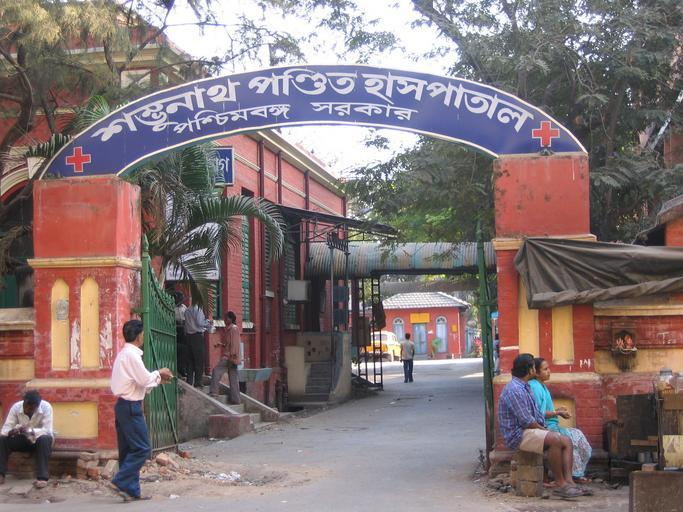
カルナータカ地方とベンガルール周辺に話者が多い(参考文献 カンナダ語)。
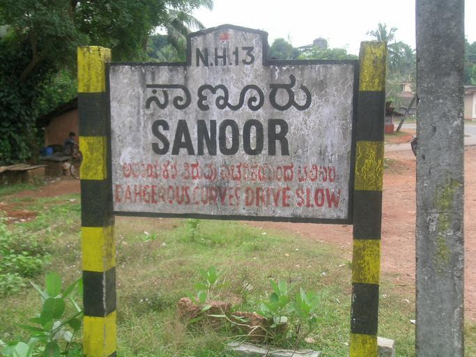
ヒンディー語・ヒンドゥスターニー語はデリーを含む地域で話される自然言語。
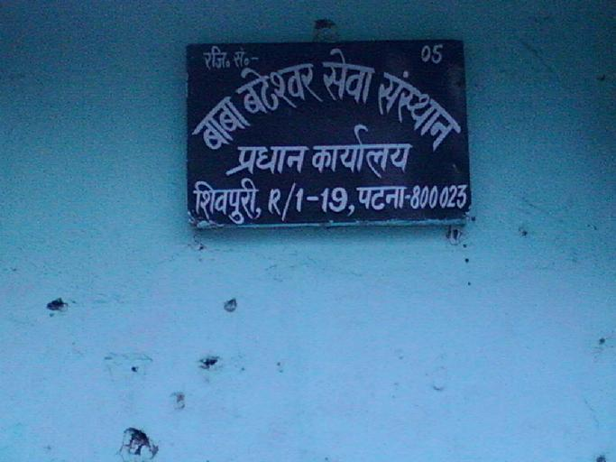
テルグ語（తెలుగు）はアーンドラ・プラデーシュ州およびテランガーナ州の公用語。文字の周りにある「つ」「✓」「ｍ」のような形が特徴的(参考文献 テルグ語)。
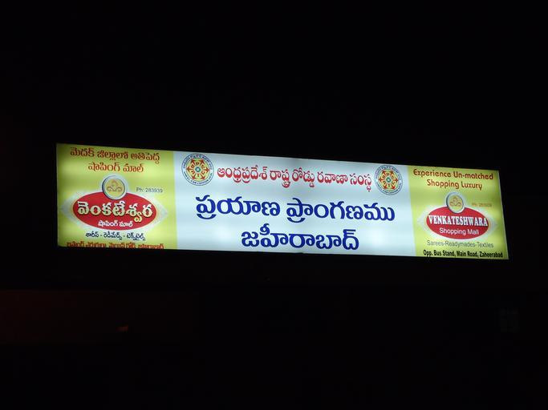
ケーララ州とラクシャドウィープで使用されている言語(参考文献 マラヤーラム語)。
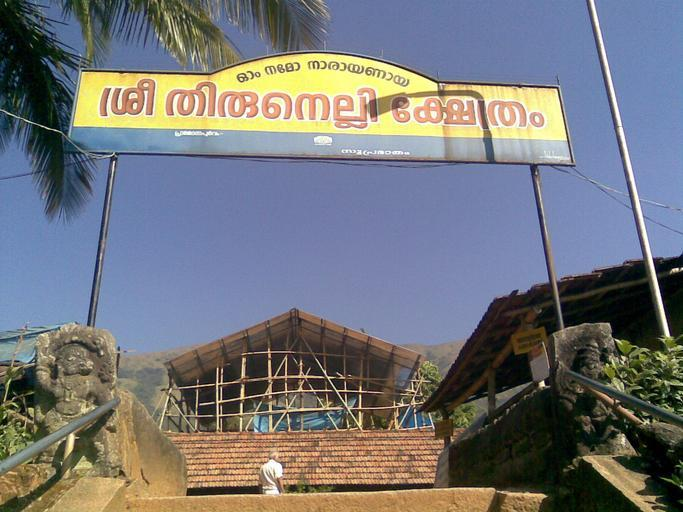

乗り物
- ナンバープレートなどに州名の省略形が見つかる
- リクシャー（rickshaw）の色が地域によって違うらしい
- 窓の周りが黄色・下が緑色：全域で見られるが北部に多い(from 『Tips and Metas for Geoguessr's NEWEST Country!! (feat. Duskden2)』)
- 窓の周りが黄色・下が黄色：南に行ってみる？
ナンバープレートに州名が書かれている。バスやトラックの側面に書いてあるものは視認できることが多いが画質は悪く読めないことも多い。州名はインドの県の一覧を見てください。

By Maximilian Dörrbecker (Chumwa) - Own work, CC BY-SA 2.5, Link
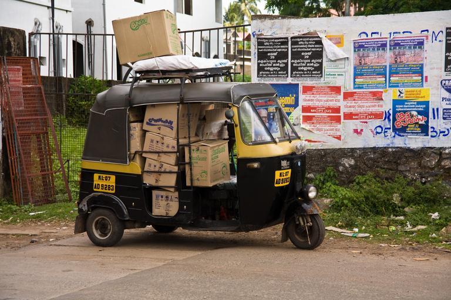
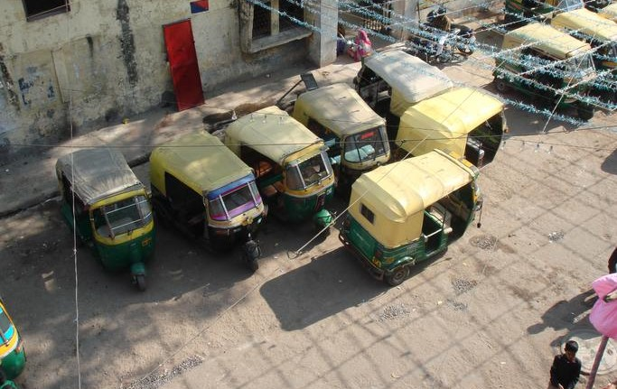
黄色の時は南に行ってみる？
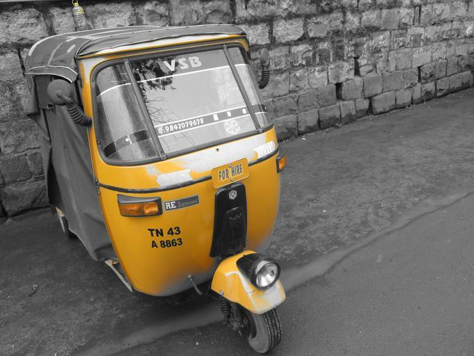
農業
- 農業が場所によって異なる
- アブラヤシはテランガーナ州がほとんど
- 菜種の畑は北西部の乾燥地域が多い
- 綿花はデカン高原、とくにマハーラーシュトラ周辺の土が黒い地域が多い
- お茶の畑は東部・南部の２地域のどちらか
- 大麦・小麦畑のように見えるならばマディヤ・プラデーシュよりも北に行ってみる
- 農作物の分布データ出典：U.S. DEPARTMENT OF AGRICULTUREUSDA(USDA)
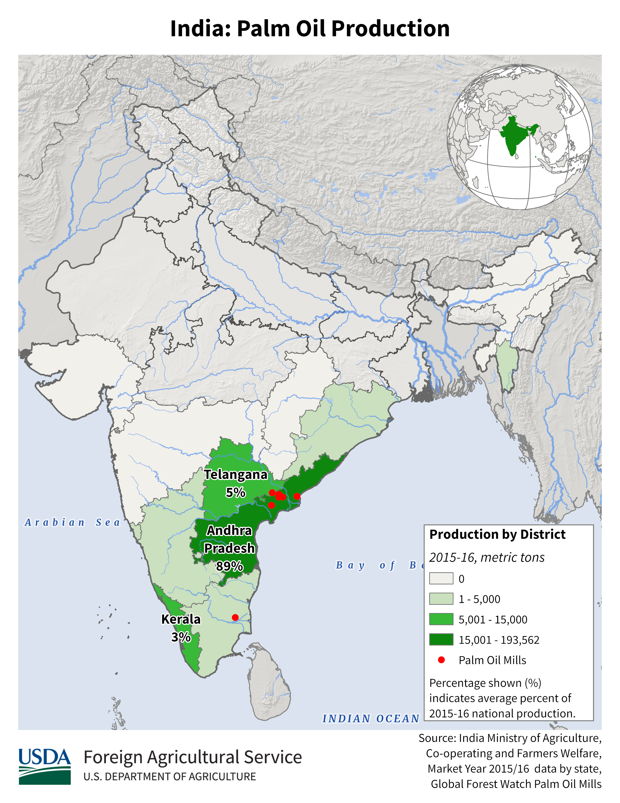
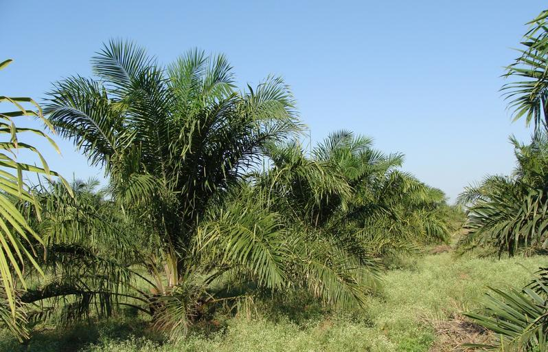
南全域に存在しており、とりわけ南東側のアーンドラ・プラデーシュ（Andhra Pradesh）州に多い。
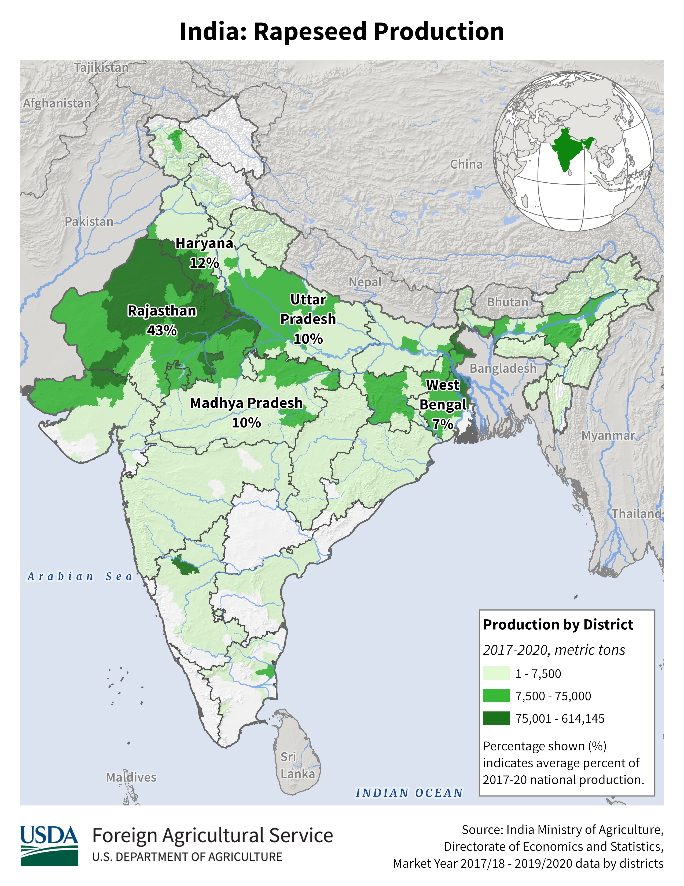
北の方の特に乾燥した地域周辺に多い。
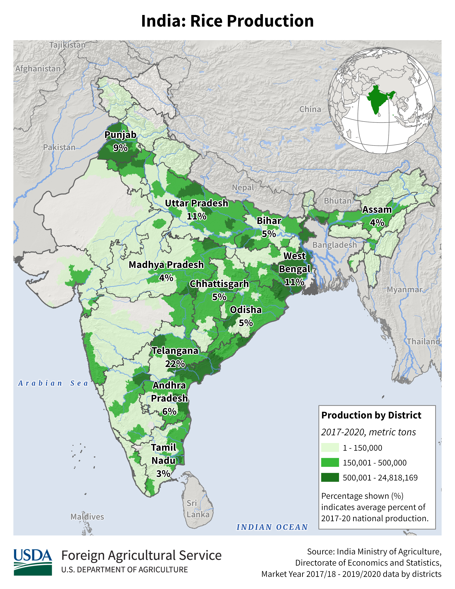
とりあえず東側に。
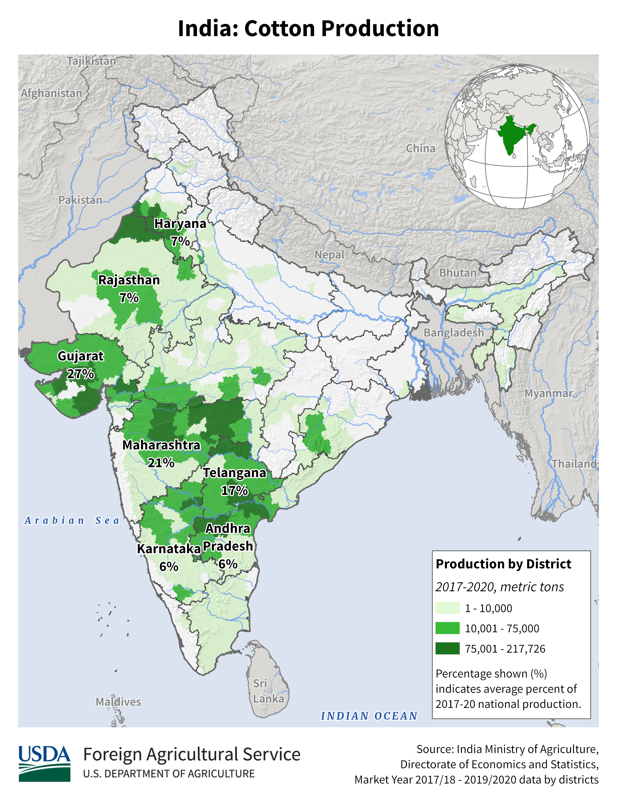
土が黒く肥沃なデカン高原では綿花の生産が盛んだ。
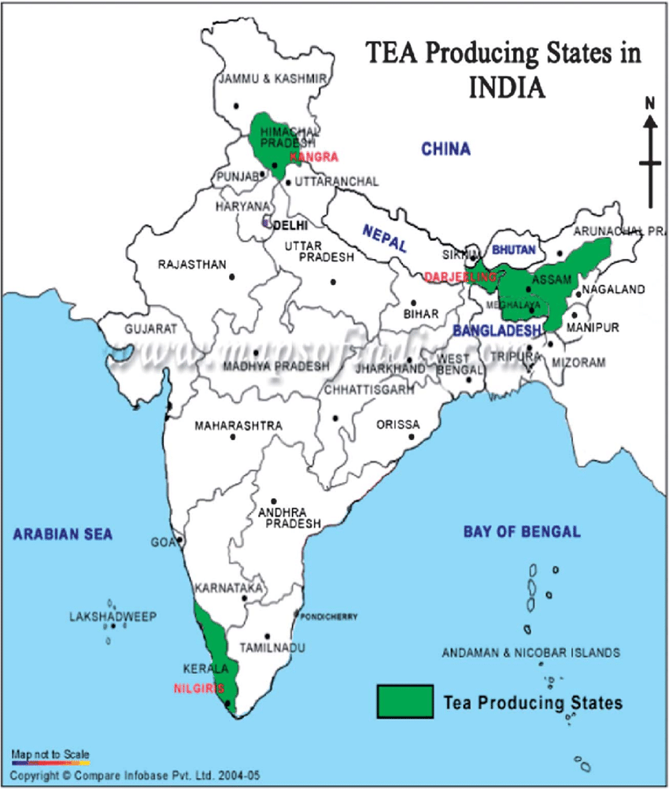
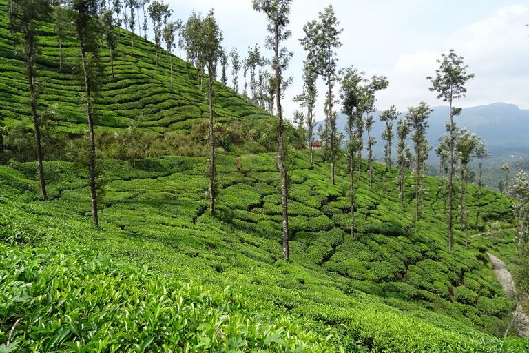
図の緑の地域に多いが、ヒマチャル・プラデシュにはストリートビューがあまり無いため東部・南部の２地域のどちらかの可能性が高い(図の出典：Lagad, Rupali A., et al. “Elemental Profiling of Indian Tea by Inductively Coupled Plasma Optical Emission Spectrometry (ICP-OES).” Atomic Spectroscopy 32.4 (2011): 168.)。
建築①
- 黄色いタンクがある場合おそらくベンガル―ルのような南の街
- 北部は赤レンガ造りの建物が多い
- 南部はラテライトを塗った壁やコンクリートの壁に平な瓦が付いた家
- Jodhpurを中心とした北西の家屋の壁が青く塗られていることがある(参考文献 ジョードプル)

{kind=link}
Jodhpur旧市街の家屋の壁などは青く塗られていて、青くペイントされた建物が散見される(参考文献 ジョードプル)。ただし南の方にも普通にあるみたいなので地域を限定するのは難しいかも。
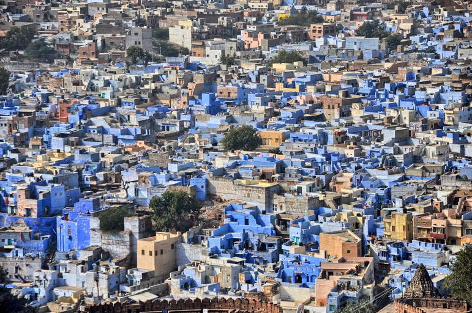
建築②
- Goa州：雨が最も多く背の高いヤシが見られる
- Kerala州：Goaと同じく背の高いヤシが見られるがGoaよりも二階建て建築が多い(参考文献 インド・ネパールにおける伝統建築の技法と伝承)
- Assam州：地震や洪水がある地域のため、高床式の家や軽い素材の塀が見つかる
アンダマン諸島がGoaやAssam州に似た雰囲気なので地域を外さないように気を付ける

By Bharath maraboina123 - Own work, CC BY-SA 4.0, Link
Goaと同じく雨が多く、背の高いヤシが見つかる。Keralaの伝統的な建築は２階建てのものが多い(参考文献 インド・ネパールにおける伝統建築の技法と伝承)。
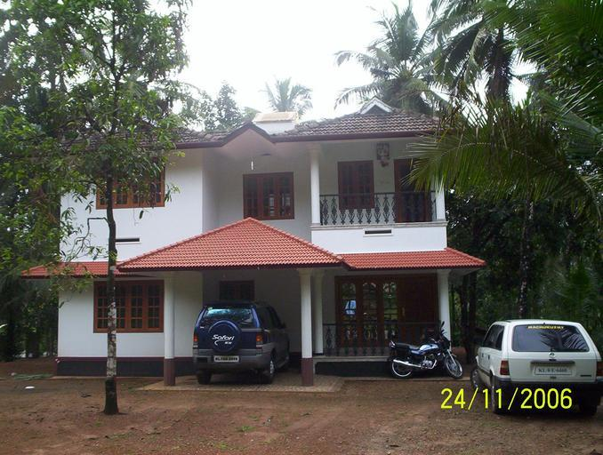
Kerala州やAssam州のような降水量が多い地域はこんな感じの背の高い木が多い(参考文献 Areca catechu)。
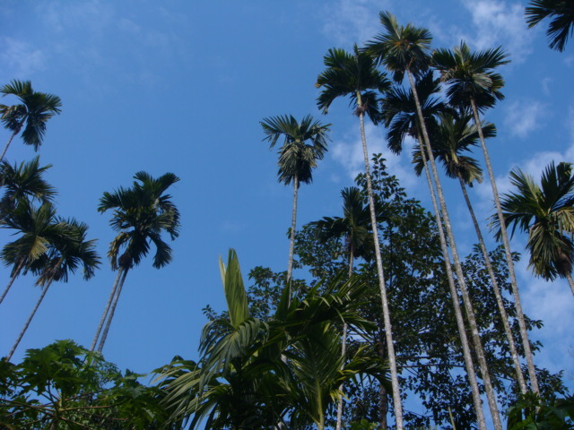
Assam州は地震と洪水がある地域なので、竹のような軽い素材を使った壁や高床式の家もたまに見つかるらしい(参考文献 イギリス植民地国におけるバンガローの産業化と再生産に関する比較研究)。レンガのような重い素材は地震で崩れてしまう。

By Nalbarian - Own work, CC BY-SA 4.0, Link
電柱の形
- 電柱の形が州や街によって異なる
- 電柱の上に何か四角い穴があるならPanjabの地域の街
- 黄色い長方形のステッカーがあるとUttar Pradeshの地域かも(from 『THE INDIA GEOGUESSR GUIDE』)
- 穴のあるポールはGujaratの地域(from 『Tips and Metas for Geoguessr's NEWEST Country!! (feat. Duskden2) - zi8gzag』)
- 区切りのあるポール（セクションポール）があるのはTelangana・Andhra Pradesh？
- 下向きの直角三角形があるならMadhya Pradeshの地域かも？
- 『キ』や『干』の電柱がGoaにある
黄色い長方形のステッカーがある(from 『THE INDIA GEOGUESSR GUIDE』)？破れたり上から紙を張られたりして視認しにくい。
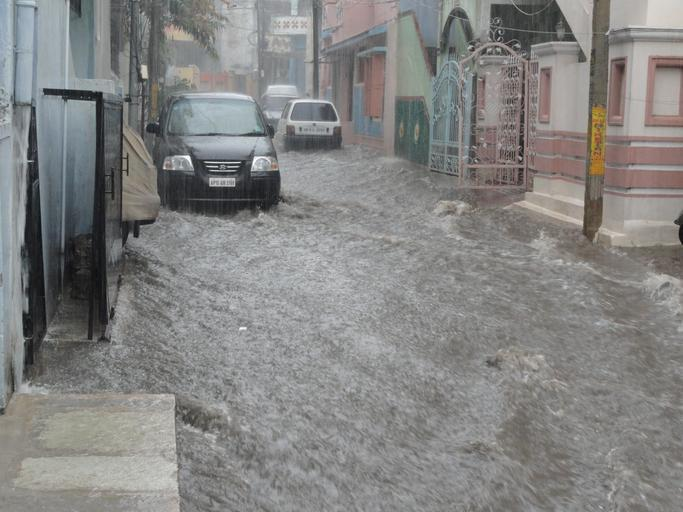
穴のあるポール（ホーリーポール）がある(from 『Tips and Metas for Geoguessr’s NEWEST Country!! (feat. Duskden2) - zi8gzag』)。
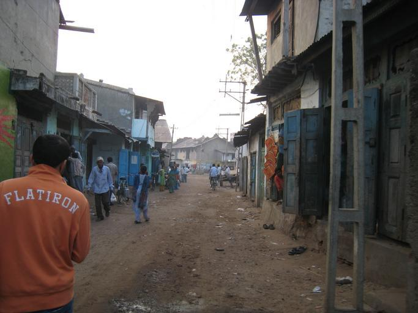
Hyderabadなどに区切りのあるポール（セクションポール）がある？
この山のような形の電柱はどこにでもあるように思うが、下の部分に▽があるのが特徴的かもしれない。
『キ』や『干』の電柱、かなり当たる印象。
土の色
赤っぽい土は南東、黒っぽい色はデリーから南の内陸、サラサラの白っぽい土は北の方のイメージ？
赤っぽい土は南東か南の可能性があるが範囲は結構広い
黒土はレグール土とも呼ばれ、綿花の栽培にも向いている(参考文献 Major soil deposits of India)。
インダス川、ガンジス川によって堆積した沖積層（alluvial）が北部にある。一般的には平坦で湿地が散見され、 主に固まっていない泥、砂、石から構成される(参考文献 沖積層)。
土が赤くても周りが険しい山で森が多いならばネパールの東西なども検討する。
都市・町の絞り込み
- 標高が3600m以上の地点にチベット民族が大半を占めるLehという都市がある
- 街頭のポールなどに数字が書かれた黄色のラベルが貼ってあるならばChandigarh(from 『THE INDIA GEOGUESSR GUIDE』)
代表的な企業の説明
| 企業名 | コード | 説明 | 決算 | 配当履歴 |
|---|---|---|---|---|
| HDFC銀行 | NASDAQ | 資産と時価総額でインド最大の民間銀行。 | Dividend History | |
| ICICI銀行 | NASDAQ | インドで最大規模の銀行であり、インド準備銀行によってSystemically important financial institution(システム上重要な銀行)(参考文献 Systemically important financial institution)の指定がされている。 | Dividend History | |
| Reliance Industries | - | インドで最大規模の民間企業。資源・石油化学が主な事業だがエンタメや通信事業も行うコングロマリット。NIFTY 50構成銘柄(参考文献 NIFTY 50)。 | - | - |